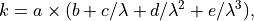
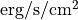
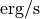

Fluxes, colour excess and attenuation¶
-
galaxy.photometry.calzetti_law(lbda, rv=4.05, a=2.659, b1=- 1.857, c1=1.04, d1=0, e1=0, b2=- 2.156, c2=1.509, d2=- 0.198, e2=0.011)[source]¶ Code author: Epinat Benoit - LAM <benoit.epinat@lam.fr>
Attenuation curve from Calzetti et al. (2000). The coefficients can be modified in input. In principle, this law is valid from 0.12 to 2.2 microns.
The relation is

with
 the wavelength.
the wavelength.- Parameters
lbda (float or ndarray[float]) – wavelength in microns
rv (float) – (Optional) ratio of the total to selective attenuation
a (float) – (Optional) multiplicative coefficient
bi (float) – (Optional) coefficients for the relation above 0.63 microns
bi – (Optional) coefficients for the relation below 0.63 microns
- Returns
Calzetti attenuation
- Return type
float or ndarray[float]
-
galaxy.photometry.dust_attenuation_calzetti(lbda, ebv, rv=4.05)[source]¶ . codeauthor:: Epinat Benoit - LAM <benoit.epinat@lam.fr>
Compute the dust attenuation using the Calzetti attenuation curve (could be more general adding a function name) from the colour excess.
- Parameters
lbda (float or ndarray[float]) – wavelength in microns
ebv (float) – colour excess
rv (float) – (Optional) ratio of the total to selective attenuation
- Returns
dust attenuation in mag
- Return type
float or ndarray[float]
-
galaxy.photometry.cardelli_law(lbda, rv=3.1)[source]¶ Code author: Epinat Benoit - LAM <benoit.epinat@lam.fr>
Attenuation curve from Cardelli et al. (1989). The coefficients can be modified in input.
Note
In principle, this law is valid from 0.1 to 3.3 microns. For MW, Rv~3.1.
- Parameters
lbda (float or ndarray[float]) – wavelength in microns
rv (float) – (Optional) ratio of the total to selective attenuation
- Returns
cardelli attenuation
- Return type
float or ndarray[float]
-
galaxy.photometry.dust_attenuation_cardelli(lbda, ebv, rv=3.1)[source]¶ Code author: Epinat Benoit - LAM <benoit.epinat@lam.fr>
Compute the dust attenuation using the Cardelli attenuation curve from the colour excess.
- Parameters
lbda (float or ndarray[float]) – wavelength in microns
ebv (float) – colour excess
rv (float) – (Optional) ratio of the total to selective attenuation
- Returns
dust attenuation in mag
- Return type
float or ndarray[float]
-
galaxy.photometry.flux_to_lum(floii, z)[source]¶ Code author: Epinat Benoit - LAM <benoit.epinat@lam.fr>
Convert a flux into a luminosity.
- Parameters
floii (float or ndarray[float]) – flux in . Optionally, can directly be given as an Astropy Quantity with a unit of the kind .
z (float or ndarray[float]) – redshift
- Returns
luminosity in 
- Return type
float or ndarray[float]
-
galaxy.photometry.correct_extinction(floii, z, av_fast, ebv, lbda=0.3728)[source]¶ Code author: Epinat Benoit - LAM <benoit.epinat@lam.fr>
Correct for both galactic extinction and internal extinction.
- Parameters
av_fast (float or ndarray[float]) – attenuation from FAST
ebv (float or ndarray[float]) – colour excess
floii (float or ndarray[float]) – ionised gas flux
z (float or ndarray[float]) – redshift
lbda (float or ndarray[float]) – (Optional) rest-frame wavelength in microns
- Returns
flux corrected of extinction
- Return type
float or ndarray[float]